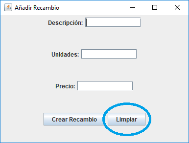

Aquí tenemos las distintas opciones de los recambios. En función de la seleccionada podremos trabajar con los recambios de distinta forma.

Para añadir recambios se nos mostrará este pequeño menú.

En descripción, colocaremos la descripción del recambio que queramos añadir.
En unidades, colocaremos las unidades del recambio que tengamos en stock que vamos a añadir.
En precio, colocaremos el precio del recambio que vamos a añadir.
Para añadir el recambio pulsaremos sobre el botón Crear Recambio.

Para vaciar los cuadros de texto pulsaremos sobre Limpiar.
Cuando añadamos el recambio se nos mostrará un diálogo en el que nos dará por correcto el alta.

Si pulsamos en el menú sobre consultar recambios nos encontramos con una tabla en la que encontramos los recambios con todos sus datos.

Si pulsamos sobre el botón de Aceptar se nos cerrará la ventana.
Si pulsamos sobre imprimir PDF nos creará un pdf con una tabla en la que encontramos todos los recambios.